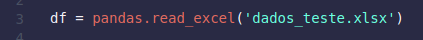
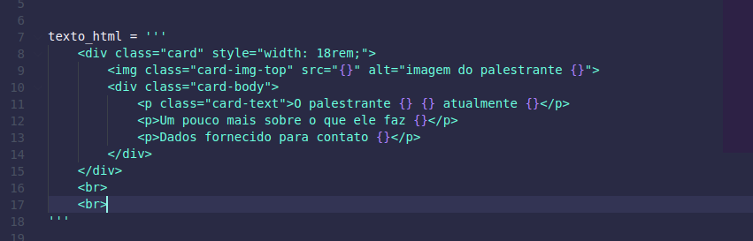
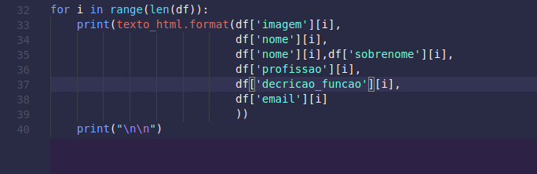
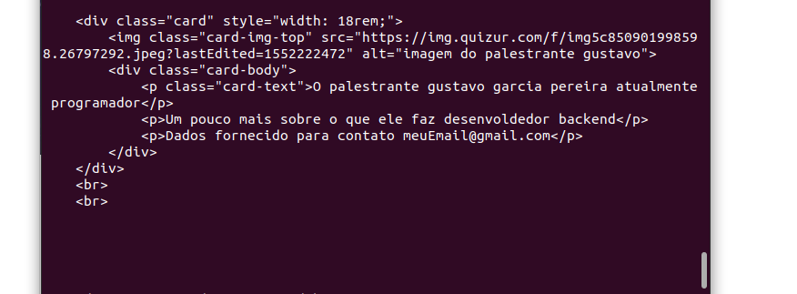

Vamos imaginar temos uma tarefa chata de escrever uma pagina com essas informações
Por exemplo, você esta construindo uma pagina para divulcar um evendo
e alguem te da uma planilha com todos os palestrantes e sua informações
então você pensa, isso esta ficando macante então posso altomatizar
estou aqui para te dar uma mão ou melho um norte!
Nesse caso temos uma planilha com nossos dados, chamadas dados_teste.xlsx
e usaremos a biblioteca pandas
agora consumiremos essa base com o comandado
vai varregar dodas as informações na variavel df
pegamos um html base como esta, no meu caso um card do bootstrap
a onde temos que poder o texto dados que pegaremos do exel colocamos os sinal {}
e com esse trecho de código
nos respectivos {} acima, coloque o respectivas informações
cada volta do meu i vai ser um registro da minha tabela
e cada posição do meu dicionario [] vai ser respectivos as minhas colunas
da tabela
saida no ternima foi mais ou menos assim
bom de um ctrl+c no terminal de ctrl+v no seu html e veja o resultado
págima texte gerada aqui
Claro que não vai ser gerado um html perfeiro
mas no meu caso me ajudou a dar uma baita ajuda
depois só fui ajustando o html para deixar melhor e dar um acabemento
se quiser ler mais sobre o assunto, entre no linke do livro abaicho
ele da varios insights sobre como usar o python para altomatizar tarefas simples!
espero que tenha gostado e vou melhor mais no próximo